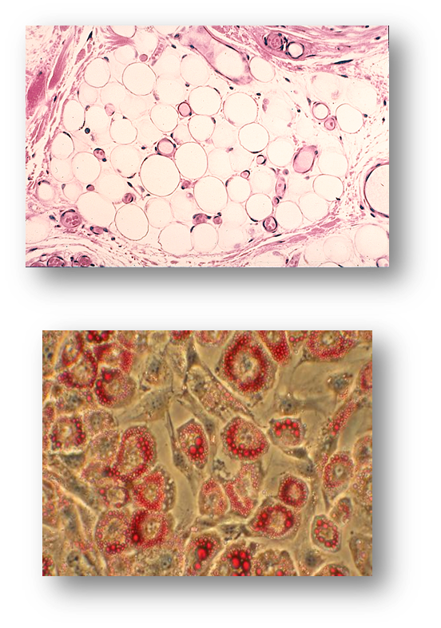

Fat Cells
Fat Cells, also known as Adipose Tissue, have several jobs in the body including:
- Energy Storage: In conditions where the body uses a lot of energy or has not consumed enough food, it can use fat stored in fat cells to provide energy.
- Temperature Regulation: Fat Cells surround the body's muscles and organs, which helps protect them and keep them at the right temperature.
